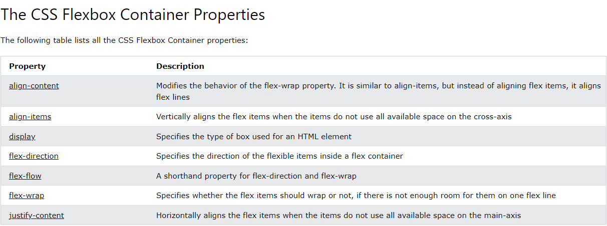
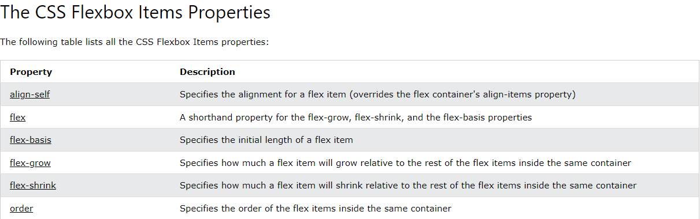

O eixo principal e o eixo cruzado
A chave para entender o "flexbox" é entender o conceito de "eixo principal" e "eixo cruzado". O eixo principal é aquele definido pela propriedade flex-direction. Se a definição for row o eixo principal é a linha (ou eixo X), se for column, é a coluna (ou eixo Y).
Itens flexíveis se movem como um grupo no eixo principal. Lembre-se: há várias coisas e queremos ter o melhor layout para todas as coisas no grupo.
O "eixo cruzado" fica perpendicular ao eixo principal, então se a flex-direction é row, o eixo cruzado é a coluna.
No eixo cruzado é possível fazer duas coisas: mover os itens individualmente ou como um grupo, de forma que se alinhem uns aos outros e ao contêiner flexível. Além disso, se há quebras de linhas flexíveis, você pode tratá-las como um grupo para controlar como o espaço é distribuído.
Considerando o eixo principal, o eixo cruzado e o modo de escrita do documento, fica mais fácil de entender o flexbox quando falamos de começo e fim, em vez de top, bottom, left e right. Cada eixo tem um começo e um fim. Chamamos o começo do eixo principal de main-start, então os itens flexíveis geralmente se alinham a ele. O fim desse eixo é o main-end. O início do eixo cruzado é o cross-start e seu fim é o cross-end.
Como criar um contêiner flexível
Usando o código a seguir, vejamos como o flexbox se comporta:
<div class="container" id="container"> <div>One</div> <div>Item two</div> <div>The item we will refer to as three</div> </div>.container { display: flex; }
Isso cria uma caixa com nível de bloco e filhos flexíveis. Os itens flexíveis imediatamente começam a exibir o comportamento do flexbox, usando seu valor inicial. O valor inicial significa que:
- Os itens são exibidos como linha.
- Os itens não "quebram" a linha (don't wrap).
- Os itens não "crescem" para preencher o contêiner.
- Os itens se alinham no começo do contêiner.
Como controlar a direção dos itens
Apesar de ainda não termos adicionado a propriedade flex-direction, os itens são exibidos como uma linha porque o valor inicial de flex-direction é row. Se é isto que você quer, não precisa fazer mais nada. Para mudar a direção, adicione a propriedade e um de seus quatro valores:
row: os itens são exibidos como uma linha.row-reverse: os itens são exibidos como uma linha que começa no final do contêiner flexível.column: os itens são exibidos como uma coluna.column-reverse: os itens são exibidos como uma coluna que começa no final do contêiner flexível.
Observação: tome cuidado ao usar propriedades que mudam como os itens são exibidos no documento HTML, já que isso pode afetar negativamente a acessibilidade. Os valores row-reverse e column-reverse são bons exemplos disso. A reorganização só aparece visualmente, e não logicamente. Isso é importante porque leitores de tela veem a ordem lógica e lerão o conteúdo assim, então quem os usa para navegar com o teclado usará a mesma ordem lógica. Para saber mais, consulte este link e este link.
Como "quebrar" os itens flexíveis
O valor inicial da propriedade flex-wrap é nowrap, isto é, se não há espaço suficiente no contêiner, os itens extravasam.
Os itens que usam o valor inicial se reduzem o máximo possível, até o tamanho de min-content antes de extravasarem do contêiner.
Para que os itens quebrem, use a propriedade flex-wrap: wrap; no contêiner flexível. Por exemplo: o primeiro conjunto de caixas abaixo tem flex-wrap: nowrap;, e o segundo tem flex-wrap: wrap;.
Ao quebrar, o contêiner flexível cria várias linhas flexíveis. Isto é, cada linha age como um novo contêiner flexível em termos de distribuição de espaço. Assim, se estamos quebrando linhas, não é possível alinhar itens da linha 2 com os da linha 1. É por isso que dizemos que o flexbox é monodimensional: é possível controlar o alinhamento em um eixo (a coluna ou a linha), mas não em ambos, como se faz com grid.
Controlar o espaço dentro de itens flexíveis
Presumindo que o contêiner com o qual estamos trabalhando tem mais espaço do que o necessário para exibir os itens, esses alinham-se no início do contêiner e não se expandem para preencher o espaço. Eles param de se expandir no máximo de conteúdo. Isso ocorre porque o valor inicial das propriedades flex- é:
flex-grow: 0: os itens não se expandem.flex-shrink: 1: os itens podem se encolher para ficarem menores do que aflex-basis.flex-basis: auto: os itens têm um tamanho base automático.
Isso pode ser resumido com flex: initial. Essa propriedade resumida, ou os valores completos com flex-grow, flex-shrink e flex-basis, são aplicados aos filhos do contêiner flexível.
Para que os itens se expandam e para que os itens maiores tenham mais espaço do que os menores, use flex:auto. Isso faz com que os itens fiquem com tamanhos diferentes, já que o espaço compartilhado entre eles é dividido após cada item receber seu tamanho de max-content. Então um item maior fica com mais espaço. Para que todos os itens tenham um tamanho consistente, ignorando o tamanho do conteúdo, mude flex:auto para flex: 1. Isso faz com que todos os itens tenham tamanho "0" e, portanto, todo o espaço do contêiner flexível pode ser distribuído igualmente.
Observação: também há o valor flex: none, que faz com que os itens fiquem inflexíveis e não se expandam ou encolham. Isso pode ser útil se quisermos usar o flexbox só para acessar suas propriedades de alinhamento, mas não pelo seu comportamento flexível.
Também é possível definir diferentes valores para flex-grow, flex-shrink e flex-basis individualmente, alterando de forma exclusiva o comportamento de cada item flexível.
Como reordenar os itens flexíveis
É possível reordenar os itens no contêiner flexível usando a propriedade order, que possibilita reorganizá-los em grupos ordinais. Os itens são exibidos na direção determinada pela propriedade flex-direction, com os valores menores primeiro. Se mais de um item tem o mesmo valor, eles serão exibidos juntos.
Observação: usar esta propriedade gera os mesmos problemas que usar as propriedades row-reverse e column-reverse de flex-direction. Com ela é muito fácil criar uma experiência desconexa para alguns usuários. Não use order para corrigir a ordem de itens no documento. Se os itens precisam estar em uma ordem lógica específica, altere o HTML!
Visão geral sobre alinhamento com flexbox
O flexbox oferece um conjunto de propriedades para alinhar itens e distribuir o espaço entre eles. Essas propriedades são tão úteis, que já foram movidas para uma especificação própria, que também está disponível no layout com grid. Vejamos agora como elas funcionam com o flexbox.
Há dois grupos de propriedades:
- As de distribuição de espaço:
justify-content: distribui o espaço no eixo principal.align-content: distribui o espaço no eixo cruzado.place-content: abreviação para definir as duas propriedades acima.- As de alinhamento:
align-self: alinha um único item no eixo cruzado.align-items: alinha todos os itens como um grupo no eixo cruzado.
Note que se estamos trabalhando com o eixo principal, as propriedades começam com justify- e no eixo cruzado, começam com align-.
Antes do layout flexbox, havia quatro modos de layout:
- block: para as seções de uma página da Web.
- inline: para texto.
- table: para dados de tabelas em duas dimensões.
- positioned: para posicionar um elemento explicitamente.
Com o advento do flexbox, ficou mais fácil criar um layout flexível e responsivo sem usar float ou um posicionamento explícito.
Vamos começar com um contêiner flexível:
Um layout flexível deve ter um elemento pai com a propriedade display definida como flex. Os filhos diretos do contêiner flexível automaticamente se tornam itens flexíveis.
Vamos alterar a propriedade flex-direction para column:
Vejamos agora dois valores (nowrap e wrap) da propriedade flex-wrap em uma caixa com 12 itens:
E podemos, ainda, usar a propriedade flex-flow para definir as duas opções acima, com row-reverse wrap:
justify-content: center alinha os itens no eixo principal:
align-items: center alinha os itens no eixo secundário:
Podemos usar também space-around, space-between e space-evenly:
Agora vejamos as propriedades que atuam no eixo cruzado, começando com align-items definido como center e stretch:
Agora align-content como space-between:
Portanto, para alinhar perfeitamente um elemento na página, é só definir justify-content e align-items como center:

Elementos filhos
Vejamos agora como lidar com os elementos filhos usando as propriedades order, flex-grow, flex-shrink, flex-basis, flex e align-self.
A ordem dos itens pode ser alterada com a propriedade order, mesmo que no HTML elas apareçam na ordem normal:
Vejamos a propriedade flex-grow:
Os dois primeiros itens tem valor 1, o terceiro item tem valor 2 e o quarto item tem valor 4.
Agora vejamos flex-shrink e flex-basis:

Responsividade
Em Media queries vimos que essas consultas podem ser usadas para criar layouts diferentes para diversos dispositivos e tamanhos de tela. Por exemplo, se precisarmos de um layout de duas colunas para a maioria dos tamanhos de tela e um layout de uma coluna para telas menores, como celulares e tablets, podemos alterar a propriedade flex-direction de row para column em determinado tamanho de tela. Vejamos isso em ação:
Uma outra maneira de fazer isso é alterar a porcentagem da propriedade flex dos itens flexíveis para criar layouts diferentes para os diversos tamanhos de tela. Para que esse exemplo funcione, é preciso usar flex-wrap: wrap; no contêiner flexível:
Mais exemplos e ideias.